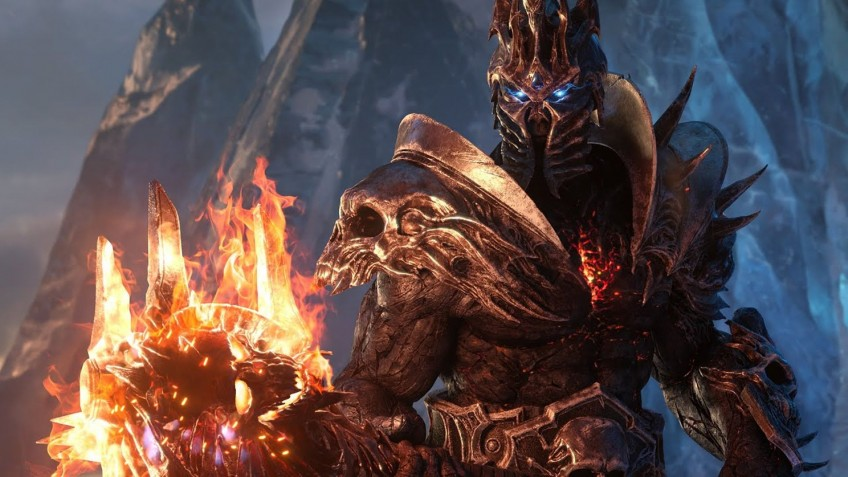

Статья
Поиграли в альфа-версию World of Warcraft: Shadowlands. Добро пожаловать в смерть!

О том, что нас ждёт в следующем крупном обновлении World of Warcraft, мы узнали почти год назад на фестивале BlizzCon. Для очередного, восьмого по счёту дополнения World of Warcraft: Shadowlands компания Blizzard приготовила стандартный набор нововведений:
новая территория (на этот раз загробный мир), новые фракции (ковенанты), очередные правки классовой системы, подземелья и рейды.
Однако в эпоху Тёмных земель нас ждёт и нечто радикально новое. Например, глобальная переделка системы прокачки. Пока что неизвестно точно, когда всё это появится на открытых серверах — известно лишь, что в этом году. Но нам удалось в числе первых поиграть в альфа-версию дополнения.
Делимся впечатлениями!
Поклонники World of Warcraft хорошо помнят, с чего Blizzard начала представление Shadowlands: с сюжетного ролика. Сильвана победила Короля-Лича, завладела его короной и открыла разлом в Тёмные земли — мир, куда попадают души погибших героев и злодеев. Зачем это ей?
Игроки уже несколько лет гадают, ради чего Сильвана и её подданные столько времени плетут интриги и нарушают соглашения. А тем временем обитатели загробного царства недоумевают: к ним давным-давно перестали прибывать души умерших. Смертные открыли тайну вечной жизни? Или это снова происки тёмных сил?..
История Shadowlands должна ответить на все эти вопросы и показать, ради чего погиб Тельдрассил и пожертвовал собой Саурфанг. Но вначале мы отправимся в мир мёртвых и увидим Утробу — место во всех отношениях жуткое.
Хотя… Нет, постойте, пока что не увидим: в альфа-версии созданные для тестирования персонажи попадают прямиком в Бастион — первую локацию дополнения из пяти и вотчину ковенанта кирий.
Бастион — место для героев и доблестных воителей, души которых должны очиститься и превратиться в подобие крылатых ангелов. А самые «очищенные» из них становятся Идеалами — Идеал чистоты, Идеал отваги, Идеал смирения, Идеал верности.
Кирии — лишь первый из четырёх ковенантов, с которыми нам предстоит повстречаться. Этот процесс хорошо знаком по системе фракций, но есть и коренное отличие: завести близкие отношения позволят лишь с одним ковенантом на выбор.
И от этого выбора зависит, какие дополнительные умения мы сможем использовать, какие наряды надевать и на каких маунтах кататься.
У каждого ковенанта — свои проблемы, но есть и общее: все они страдают от недостатка анимы. Аниму приносят с собой мёртвые души, а они уже давно перестали попадать в земли ковенантов. Кирии, в частности, вынуждены отключать своих центурионов-охранников.
Процесс переделки простых смертных (пусть даже честных и доблестных) в крылатых кирий тоже непрост: некоторые воспоминания могут буквально убить. К тому же, как вскоре выяснится, избавляться приходится не только от негатива — порой душе мешает воспарить память о доме, семье или друзьях.
Немудрено, что многие не в состоянии пройти этот путь до конца; они становятся падшими — отступниками.
Так или иначе, все обитатели Бастиона уже умерли, а вот мы прибыли туда во плоти — с помощью скрытой пока механики.
Так что очищение придётся проходить экстерном, а крылья нам и вовсе не положены. Полёты в Тёмных землях Blizzard по традиции откроет где-то через годик, а пока что их надо осваивать на своих двоих.
При этом Бастион и, вероятно, все прочие Тёмные земли — это острова и архипелаги, висящие в небе. В некоторые части локации пешком не попасть, так что кое-где предусмотрены воздушные мосты, а также более экзотические варианты «забрасывания» туда наших персонажей.
Набор занятий в альфа-версии World of Warcraft: Shadowlands постепенно расширяется, так что со временем мы наверняка вернёмся с новой информацией о дополнении и прочих территориях и ковенантах Тёмных земель. А пока ясно одно: в ближайшие два года скучать нам точно не придётся.
Надо лишь дождаться релиза или хотя бы препатча. Правда, даже по самым оптимистичным прогнозам это случится не раньше лета.